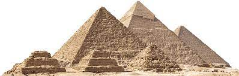
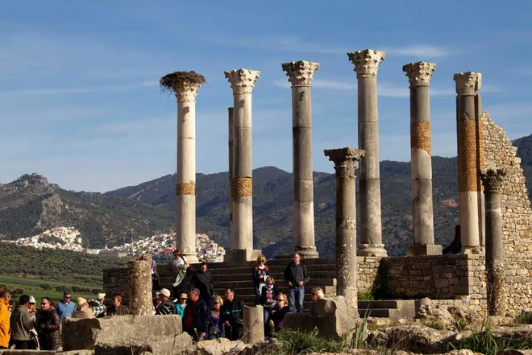
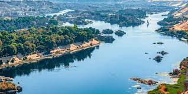
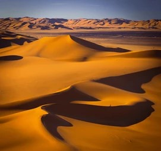

Day 5: Exploring North Africa
Introduction to North Africa
North Africa is known for its vast deserts and ancient civilizations. This region is home to some of the world's oldest and most famous historical sites, like the pyramids of Egypt.
How Many Countries in North Africa?
There are 6 countries in North Africa. Some of the well-known countries include Egypt, Morocco, and Algeria. Each country has a rich history and unique culture.
What is the Biggest Country in North Africa?
The biggest country in North Africa by area is Algeria. It's the largest country in Africa and is known for its Sahara Desert.
Main Touristic Areas in North Africa
North Africa has many famous places to visit. Here are some popular touristic areas:
- Pyramids of Giza (Egypt): Ancient pyramids built by the Pharaohs.

The Pyramids of Giza, one of the Seven Wonders of the Ancient World.
- Marrakech (Morocco): Known for its vibrant markets and beautiful palaces.

Marrakech is famous for its lively souks and the historical Medina.
- Carthage (Tunisia): Ancient ruins of a powerful city that once rivaled Rome.

The ruins of Carthage, a testament to the city's ancient glory.
- Sahara Desert: The largest hot desert in the world, covering much of North Africa.

The vast and mesmerizing dunes of the Sahara Desert.
Countries, Their Flags, and Capital Cities in North Africa
| Country | Flag | Capital City |
|---|---|---|
| Egypt |  |
Cairo |
| Morocco |  |
Rabat |
| Algeria |  |
Algiers |
| Tunisia |  |
Tunis |
| Libya |  |
Tripoli |
| Sudan |  |
Khartoum |
Culture and Languages
North Africa has a mix of Arab and Berber cultures. People here speak Arabic and French, among other languages. The region is known for its beautiful architecture, traditional music, and delicious food like couscous and tagine.
Egypt
Egypt is known for its ancient civilization and iconic monuments, including the Pyramids of Giza and the Great Sphinx.
The Pyramids of Giza are a wonder of the ancient world and a must-see.
The Nile River, the lifeblood of Egypt for millennia.
Morocco
The bustling markets of Marrakech are a shopper's paradise.

The Atlas Mountains provide breathtaking views and hiking opportunities.
Algeria
Algeria is the largest country in Africa, known for its Saharan landscapes and the historic city of Algiers.
The Sahara Desert in Algeria offers endless adventures for explorers.

Algiers, the white city, is rich in history and culture.
Tunisia
Carthage was once a powerful city-state that rivaled Rome.

Tunisia's beaches are perfect for relaxation and sunbathing.
Libya
Libya is known for its ancient Greek and Roman sites, as well as the vast Sahara Desert.

Libya's ancient ruins tell stories of its rich and varied history.
The Libyan Desert is an expanse of sand and solitude.
Sudan
Sudan is famous for its ancient Nubian pyramids and rich cultural heritage along the Nile River.

Sudan's pyramids are lesser-known but equally magnificent.

The Nile in Sudan is a cultural and historical lifeline.
Did You Know?
North Africa is not only known for its rich history and cultural diversity but also for being a strategic point during ancient times. The region has seen the rise and fall of many empires, including the Carthaginian, Roman, and Ottoman empires.
Additionally, the Sahara Desert, which covers much of North Africa, is the third-largest desert in the world after Antarctica and the Arctic. Despite its harsh environment, the Sahara is home to unique ecosystems and species adapted to extreme conditions.